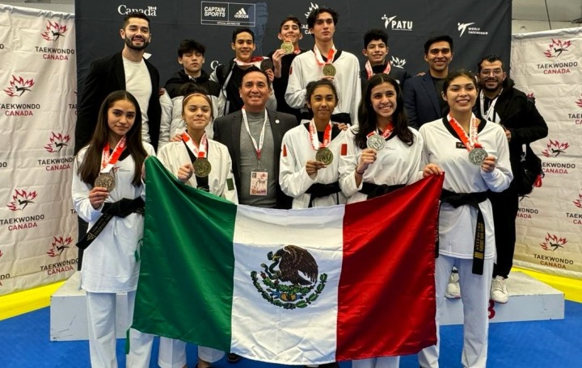
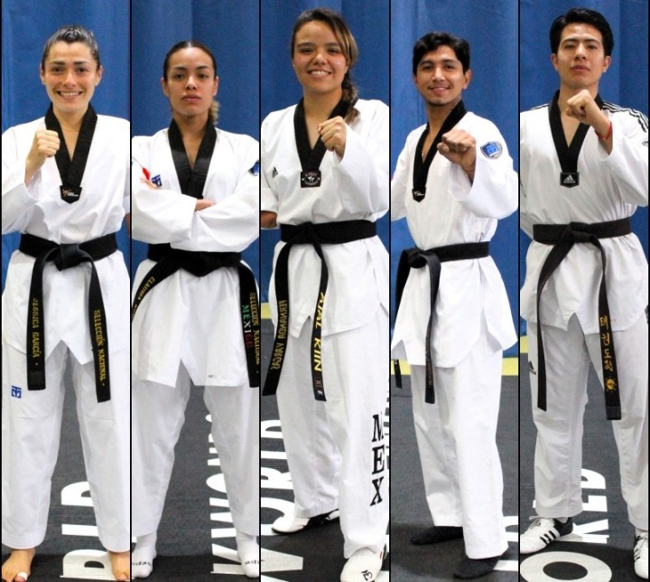
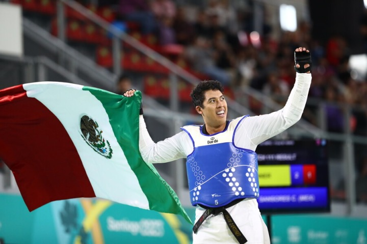
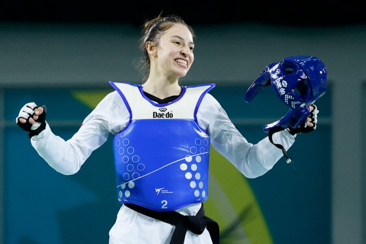
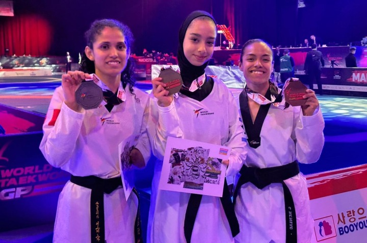

El Abierto de Canadá fue el escenario donde el taekwondo mexicano comenzó la primera cosecha de medallas en este 2024. El conjunto de poomsae, el equipo juvenil y adulto de combate, consiguieron en total 13 medallas de oro, cinco de plata y 14 de bronce. El equipo de adultos se colgó una medalla de oro y cinco de bronce. El metadl dorado cayó ór conducto de Carlos Sansores, taekwondoín que ya esta clasificado a los Juegos Olímpicos de París 2024, y ese resultado le sirvió para sumar 20 puntos al ranking olímpico y así continuar firme en la posición número dos en la categoría de más de 80 kilos. Los bronces correspondieron para Fabiola Villegas (-57 kg), Itzel Velázquez (-62 kilos), Leslie Soltero (-67 kg), Vania Celorio (-53 kg) y Juan Pablo Esquivel (-87 kilos).
La Selección Nacional de ParaTaekwondo aseguró, por lo vía del ranking, cinco plazas a los Juegos Paralímpicos de París 2024, y esos boletos fueron logrados por Jessica García, Claudia Romero, Fernanda Vargas, Luis Mario Nájera y Juan Diego García. Los primeros seis de cada categoría se ganaron el derecho de competir en París 2024, y tras el corte final que se dio después del Grand Prix final de Manchester, Jessica culminó en el segundo sitio en la categoría K44 -52 kilos, Claudia Romero en el segundo en K44 -47 kilos, Fernanda Vargas en el quinto en K44 +65 kilos, Juan Diego García en el tercero con K44 -70 kilos, y Luis Mario Nájera en el cuarto en K44 -80 kilos. “Para nosotros es de mucha alegría y satisfacción el poder tener ahora cinco plazas directas. La Conade y a la Federación Mexicana de taekwondo han trabajado muy fuerte para que el equipo mexicano pudiera ir a los eventos que dan puntos al ranking, y poder ahora decir que tenemos esas plazas y que tanto a las atletas como a nosotras nos llena de alegría”, declaró la entrenadora nacional, Jannet Alegría.
El taekwondo mexicano finalmente clasificó a dos deportistas a París 2024 por la vía del ranking olímpico. Hoy de manera oficial Carlos Sansores se sumó a esa lista tras culminar el año en la posición dos del ranking en la categoría de más de 80 kilos. El quintanarroense tenía prácticamente amarrado el boleto olímpico desde que ganó el oro en los Juegos Panamericano de Santiago de Chile, pero fue hasta el Grand Prix Final de Manchester donde se podía hacer el anuncio de manera oficial. En ese certamen, Carlos sumó otros 15.12 puntos luego de llegar a los cuartos de final del Grand Prix Final, una instancia que ganó el brasileño Maicon Siqueira por 2-0. En octavos de final, Carlos eliminó al egipcio Ahmad Rawy por 2-0. En este mes, Sansores cuenta con 440.21 unidades en el ranking y se mantuvo todo el año dentro de los cinco primeros que tienen derecho a clasificar a Juegos Olímpicos por medio del ranking.
La taekwondoín Daniela Souza clasificó a los Juegos Olímpicos de París 2024, y lo hizo después de ubicarse en el cuarto lugar en el Grand Prix Final que se realiza en Manchester donde sumó 21.6 puntos en el ranking de menos de 49 kilos. En el evento, Daniela venció en octavos de final a la alemana Sueheda Celik por 2-0, mientras que en cuartos de final eliminó a la israelí Abishag Semberg por 2-0. En la semifinal Souza perdió por 2-1 en un aguerrido combate ante la tailandesa tailandesa Panipak Wongpattanakit, y en la disputa por el bronce la turca Merve Dincel se quedó con ese metal tras ganar por 2-0. Cabe recordar que por la vía del ranking olímpico clasifican las primeras cinco de cada categoría y una por medio del Grand Slam. Souza ocupa actualmente el quinto lugar en el ranking olímpico con 353.91 puntos y le faltan por sumar los 21.6 puntos que consiguió en Manchester, mientras que la china Qing Guo cuenta esta ubicada en el sexto sitio con 314.30 unidades, y se quedó en los cuartos de final del Grand Prix Final, por lo que solamente consiguió 15.12 puntos.
La mexicana Claudia Romero se colgó la medalla de bronce dentro del Grand Prix Final de ParaTaekwondo que se realizó en Manchester, y con ello la deportista sumó otros 36 puntos en el ranking mundial de la categoría K44 -47 kilos. Romero en su camino al podio, primero venció en cuartos de final a la coreana Eojin Baek por 37-6, pero en semifinales cayó con la peruana Leonor Espinoza por 8-3. Ya en la disputa por el bronce, Claudia derrotó a Ziyodakhon Isakova (primera sembrada del torneo) de Uzbekistán por 4-0. “Me siento muy contenta con el resultado, para mi este bronce fue el cierre de este año tan importante para mi, y ahora queda esperar mi confirmación a Paris 2024. Esta temporada considero que fue fuerte pues todos quieren llegar a la justa más grande que son unos Juegos Paralímpicos, y yo di todo de mi en cada competencia para llegar a ser una de las mejores atletas de mi categoría”, indicó Romero, quien busca estar en su primera justa paralímpica.
